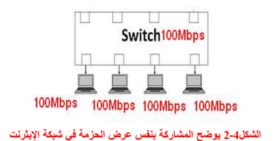
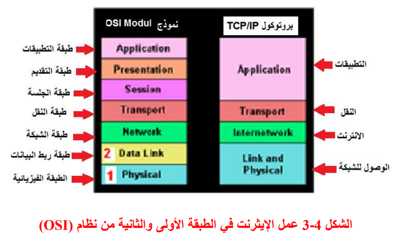
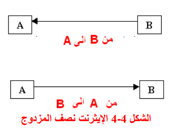
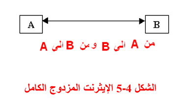

المبرمج : الطالب علي عمار تحت اشراف مدرسة المادة : م. زينب عباس مشروع تصميم موقع الالكتروني بلغة HTML للمواد الدراسيه التي تخص قسم الحاسوب للمرحلة الاولى من الدراسة الإعدادية لمدرسة اعداديه الصدر المهنيه للمواد
التاليه
1-مبادئ الحاسوب- 2 مبادئ الاتصالات
سوف نتكلم عن مواضيع تتضمن اربعة محاور وهي
ملاحظة:سوف نشرح اربعة مواضيع فقط هما
مقدمه عن الاتصالاتتكنولوجيا شبكات الايثرنتخادم الشبكات (Network Server)برمجه Websites
شبكات والاتصالات
بسم الله الرحمن الرحيم
يمثل الحاسوب وتقنية المعلومات علامةُ بارزة من علامات التطور الحضاري وسمة مميزة لعصرنا الحاضر. إذ دخلت في مختلف مجالات الحياة وأصبح جزءا مهما من متطلبات الحياة الجديدة
لقد حققت أنظمة الإتصالات الكهربائية للبشر كثيراً من الأماني والأحلام التي كان مجرد التفكير بها يُعَدُّ ضرباً من الخيال فحطمت بذلك حاجز المسافات بينهم فأصبح يكلم بعضهم بعضا بالهواتف الثابتة أو المحمولة وهم على بعد مئات وآلاف الكيلومترات
ويتحاورون وجهاً لوجه من خلال الشاشات التلفزيونية والهواتف المرئية ويشاهدون للتو ما يقع في هذا العالم من أحداث من خلال مئات المحطات التلفزيونية. وكذلك يرسلون رسائلهم ومستنداتهم في ثواني معدودة من خلال أجهزة الفاكس والبريد الإلكتروني
ويطالعون الكتب والمجلات والصحف وينجزون أعمالهم المكتبية ومعاملاتهم المالية والتجارية وهم في بيوتهم وأماكن عملهم من خلال شبكات المعلومات، وشبكة الإنترنت.ولم يقتصر دور أنظمة الإتصالات على نقل المعلومات السمعية والمرئية والمقروءة بل تعداها
إلى تطبيقات بالغة الأهمية فإستخدموها في أنظمة التحكم والقياس والمراقبة والإستشعار لنقل الإشارات بين مختلف الأجهزة والمعدات الموجودة في الطائرات والقطارات والصواريخ والتلسكوبات الفضائية والأقمار الصناعية ومحطات الأرصاد الجوية والمفاعلات
النووية والمحطات الفضائية والمصانع والمستشفيات. وإستخدمت كذلك في أنظمة الملاحة المختلفة كالرادارات وأنظمة تحديد الموقع وأنظمة الاستهداف والتوقيت لتسهيل حركة الطائرات والسفن وناقلات النفط والقطارات والمركبات وتجنبها كثيراً من المشاكل
كالتصادمات والاختناقات والضياع.
م\تكنولوجيا شبكات الايثرنت
الإيثرنت عبارة عن تكنولوجيا تسمح لجميع أجهزة الشبكة (Host) بالمشاركة (Share) بنفس عرض الحزمة (Bandwidth) فعلى فرض وجود عدد من الأجهزة تستخدم تكنولوجيا الإيثرنت مربوطة الى مبدل (Switch) وكانت سرعة هذا المبدل 100Mbps فأن كل من المستخدمين في
الشبكة ويدعى ب (Host) يعمل بسرعة 100Mbps كما في الشكل (2-4) وهذا يفسر معنى المشاركة في نفس عرض الحزمة.

CSMD/CD(Carrier Sense Multiple Access/ Collision Detection) :تقنية الإيثرنت ووظيفتها تحسس الخط قبل أن ترسل المعلومات (Data) عليه وفي حالة وجود ازدحام في خط النقل ترسل المعلومات بعد أن يفُرغ الخط. يستخدم الإيثرنت في الشبكات المستخدمة في العالم
بمقدار 90 الى 99 من الشبكات قياساً بأستخدام (Token Ring) و(FDDI) لمقدرته على تفادي التصادم (Collision) وسهولة تنصيب (Installation) الإيثرنت ويعمل في الطبقة الأولى والثانية من نظام ( Open system وكما موضح بالشكل ( 4

انواع شبكات الايثرنت
انواع الايثرنت من ناحية طرق الاتصال
نصف المزدوج : ويكون إتجاه المعلومات في الوسط الناقل باتجاه األرسال أو األستالم فقط كما في الشكل 4-4

المزدوج الكامل : ويكون اتجاه المعلومات في الوسط الناقل بإتجاهي اإلرسال واإلستالم كما في الشكل 4-5

(Network Server)خادم الشبكات /م
في الشبكات الحاسوبية الخادم (Server) هو نظام حاسوبي متصل بشبكة بيانات، أي أنه عقدة فيها، ومتخصص في أداء وظيفة معينة وتلبية الطلبات التي ترده من حواسيب أخرى على الشبكة.في مجال تقنية المعلوماتية يطلق مصطلح خادم على النظام سواء كان مادياً أو
برمجياً.تكون الخوادم ذات إمكانات متفوقة وتصميمات خاصة لتحمل العمل لفترات طويلة بلا أنقطاع ولمواجهة الأعطال بكفاءة أكبر إلا أن أي حاسوب يمكنه أن يقوم بدور الخادم مبدئياً.من أمثلة الخوادم الموجودة على الإنترنت خوادم (Web server) وخوادم نقل
الملفات (FTP) وخوادم المحادثة بأتفاقياتها المختلفة يمكن للحاسوب الواحد أن يكون خادماً وعميلا (Client) في الوقت ذاته في بعض أنواع العمليات بحيث يلبي طلبات الحواسيب كخادم وفي نفس الوقت يمكنه أن يطلب منها أو من غيرها كعميل مثل (Peer - Peer).
كما يوجد نمط آخر تتبادل فيه العقدة على الشبكة دور الخادم لعميل ودور العميل لخادم آخر وفي هذه الحالة تكون وسيطاً (Proxy) بين كل من العميل والخادم الذين تتصل بهما ولذلك أستخدامات مختلفة. يمكن أن يكون الخادم عبارة عن حاسبة واحدة كما يمكن
أن يكون الخادم عبارة عن مجموعة كبيرة من الحاسبات وكما مبين في الشكل (18-3).
شبكة الحواسيب بمفهومها الفيزيائي هي عبارة عن مجموعة من الأجهزة الحاسوبية المترابطة التي يمكن أن تتبادل فيما بينها البيانات والموارد ويكون لكل من هذه الشبكات بروتوكول يحدد عدد من القواعد والإشارات . (Token ring) أو (Ethernet) اللازمة كبروتوكول
الإيثرنت
CSS هي المسؤولة عن تنسيق وتصميم الصفحة، مما يجعل الموقع يبدو جميلاً وجذاباً للمستخدمين. باستخدام CSS، يمكنك التحكم في الألوان، الخطوط، المسافات، التأثيرات، وعرض العناصر على الصفحة. إليك بعض الأشياء التي يمكن فعلها باستخدام CSS:
• تنسيق النصوص: يمكنك تغيير حجم النصوص، نوع الخط، اللون، والمسافة بين الأسطر.
• مثال: جعل العناوين كبيرة وواضحة، وتغيير ألوان النصوص.
• تنسيق الصور: يمكن ضبط الصور لتناسب الصفحة بشكل أفضل أو إعطاءها تأثيرات.
• مثال: تقليص حجم الصورة أو إعطائها تأثيرات مثل التدوير أو الظلال.
• تحسين التخطيط: يمكنك تحديد كيف يتم ترتيب العناصر على الصفحة باستخدام Flexbox أو Grid.
• مثال: جعل العناصر في الصفحة تتوزع بالتساوي أو بجانب بعضها البعض.
• تأثيرات وتحولات: يمكنك إضافة تأثيرات عند التمرير أو عند التفاعل مع العناصر.
• مثال: تأثيرات التمرير (Hover) على الأزرار أو تغيير اللون عند التفاعل مع العناصر.
3. JavaScript
JavaScript يضيف التفاعل والحركية للموقع. باستخدام JavaScript، يمكنك التفاعل مع المستخدمين وتحسين تجربة المستخدم بشكل كبير. إليك بعض الأشياء التي يمكن عملها باستخدام JavaScript:
• التفاعل مع المستخدم: يمكنك استخدام JavaScript للاستماع إلى الأحداث مثل النقر على الأزرار، الكتابة في النماذج، أو التمرير على الصفحة.
• مثال: عرض رسالة تنبيهية عند النقر على زر، أو تغيير نص معين عند التفاعل مع المستخدم.
• تغيير محتوى الصفحة ديناميكياً: يمكنك تغيير محتوى الصفحة دون الحاجة إلى إعادة تحميلها.
• مثال: عرض/إخفاء محتوى عند التفاعل مع زر معين (مثل إظهار/إخفاء صورة أو نص).
• التأكد من صحة المدخلات في النماذج: باستخدام JavaScript، يمكنك التحقق من صحة البيانات المدخلة من قبل المستخدم قبل إرسالها.
• مثال: التأكد من أن المستخدم قد أدخل بريد إلكتروني صالح في نموذج التسجيل.
• التفاعل مع الخوادم عبر AJAX: يمكنك إرسال واستقبال البيانات من الخوادم دون الحاجة إلى إعادة تحميل الصفحة.
• مثال: إرسال استعلام بحث إلى الخادم وعرض النتائج في نفس الصفحة.
أمثلة على تطبيقات عملية باستخدام HTML, CSS, و JavaScript:
1. موقع بسيط يحتوي على محتوى تفاعلي:
• بناء موقع يحتوي على نصوص وصور، بالإضافة إلى تأثيرات CSS عند التفاعل مع الأزرار باستخدام JavaScript.
2. نموذج تفاعلي:• يمكنك إنشاء نموذج لجمع بيانات المستخدم، مثل الاسم والبريد الإلكتروني، مع التحقق من صحة المدخلات باستخدام JavaScript.
3. موقع ديناميكي مع تغييرات في الوقت الفعلي:
• تطبيقات مثل مواقع الطقس التي تعرض المعلومات في الوقت الفعلي، وتستخدم JavaScript للحصول على البيانات وعرضها للمستخدم.
خلاصة
• HTML يحدد هيكل الموقع ويوفر العناصر الأساسية مثل النصوص والصور والروابط.
• CSS يجعل الموقع أكثر جاذبية من خلال تنسيق النصوص والعناصر، وتحسين التجربة البصرية.
• JavaScript يضيف التفاعل مع المستخدم ويجعل الموقع ديناميكيًا من خلال التحكم في الأحداث وتغيير المحتوى في الوقت الفعلي.
HTML و CSS و JavaScript هم الأساس لبناء مواقع الويب الحديثة، ومع تقدم معرفتك بهم، يمكنك إنشاء مواقع أكثر تفاعلية وجمالًا